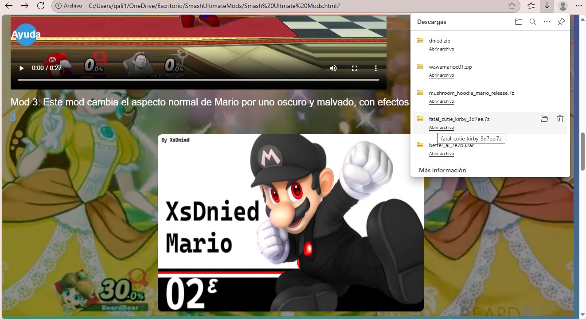
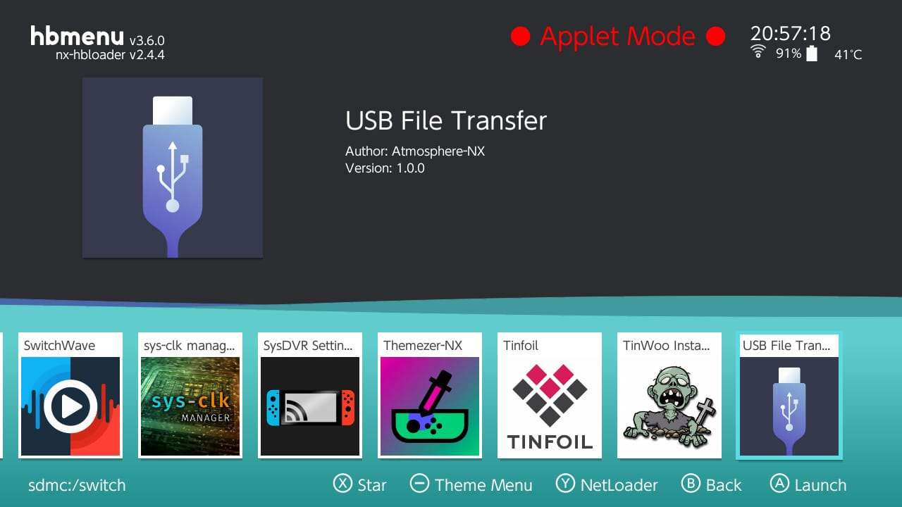
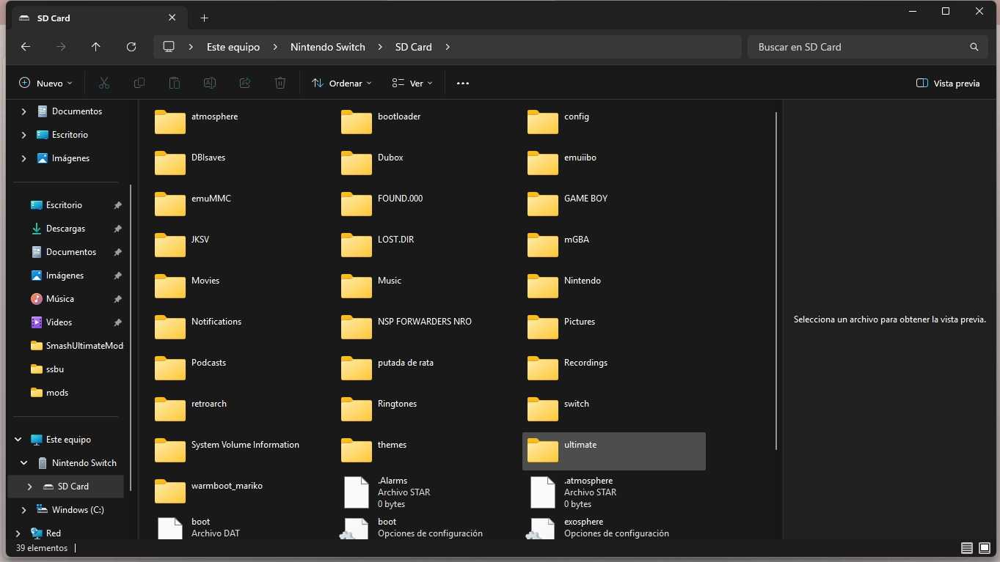
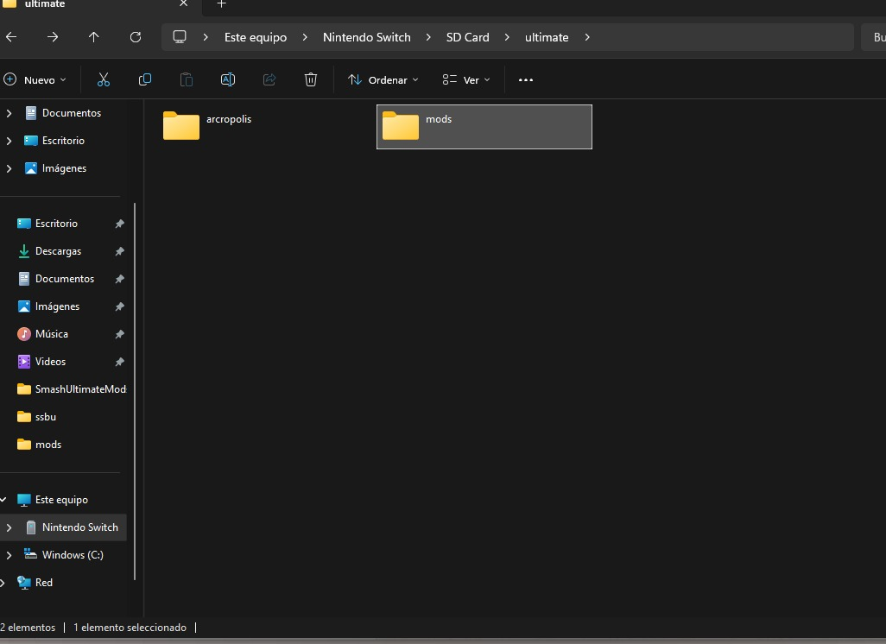
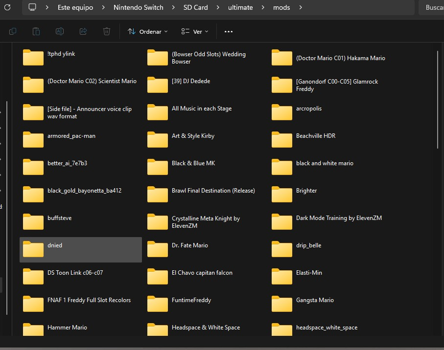
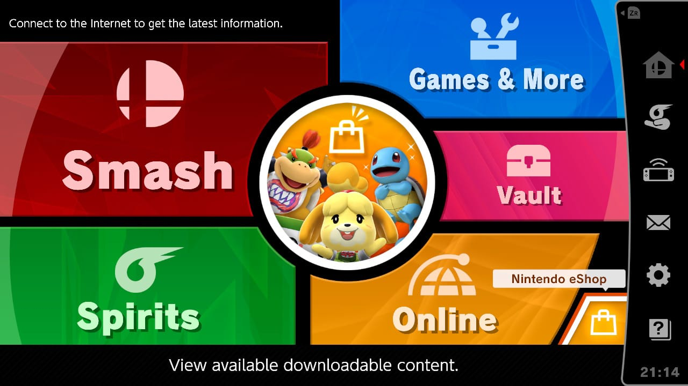
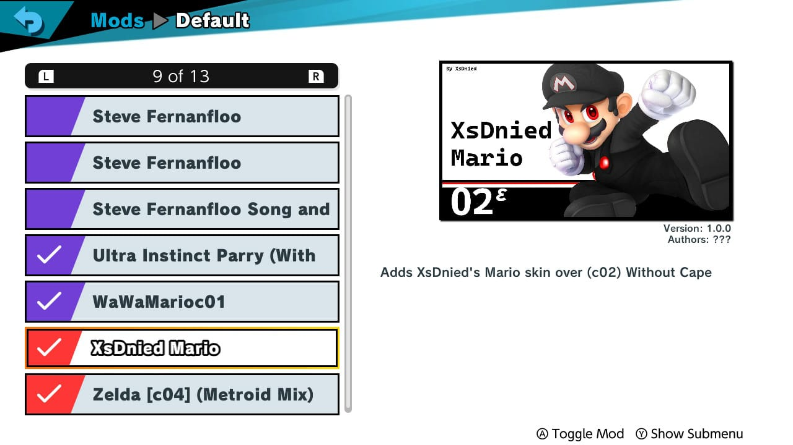

COMO INSTALAR Y ACTIAVR LOS MODS
Primero descargamos el mod que queremos
Extraemos el mod que se descargo

En nuestra Switch, entramos en la app que transimite archivos, y la conectamos a nuestra PC
Una vez extraido, nos vamos a la carpeta ultimate que se encuntra en la raiz de nuestra SD
Dentro de la carpeta ultimate, nos metemos a la carpeta mods, que es donde van todos los mods, la otra carpeta es el programa que carga los mods
Y pegamos ahi el mod extraido ya
Una vez eso, salimos de la app y entramos al juego, y entramos a la NShop, que es donde se manejan los mods
Buscamos el mod que descargamos y los activamos con el Boton A, se vera una palomita para darse cuenta que esta activado
Y por ultimo entramos a cualquier modo de juegoy buscamos el mod que descargamos y listooo